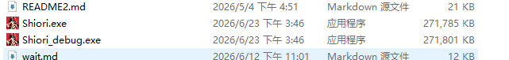
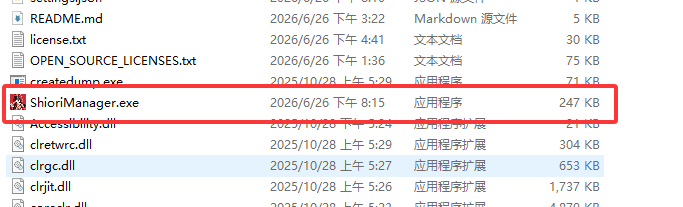
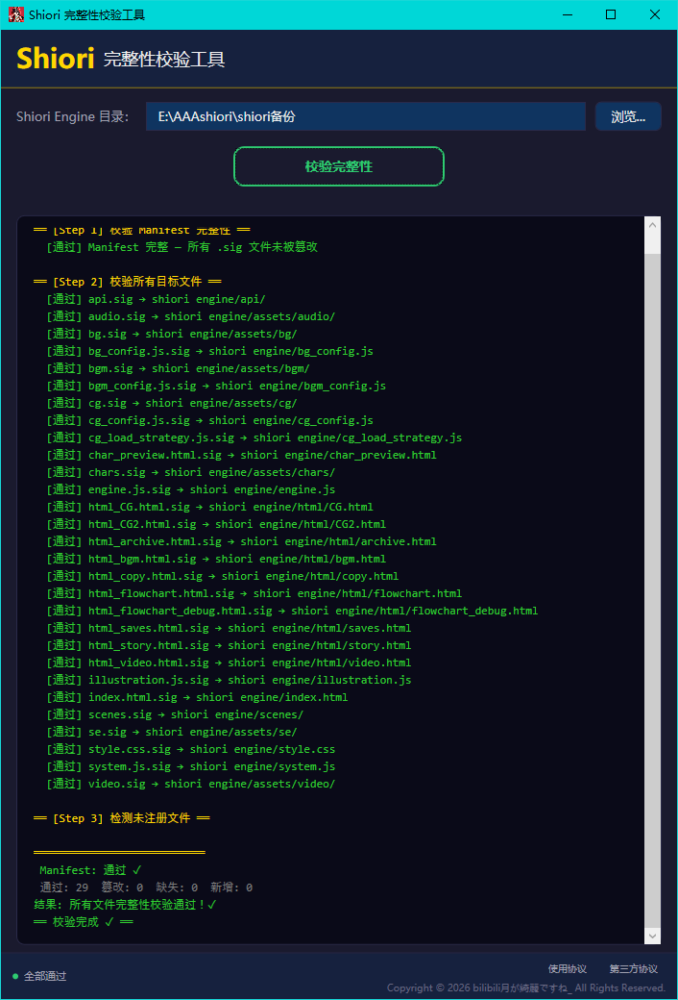
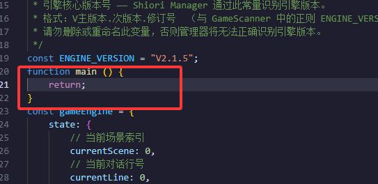
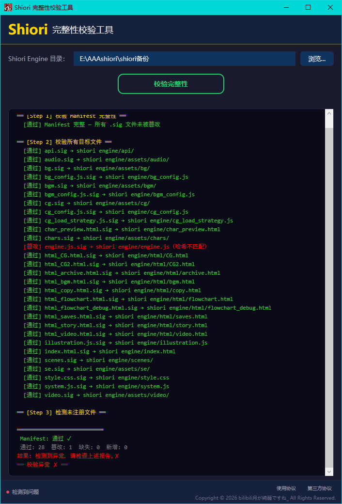

Shiori 系列（视觉小说）产品使用说明文档
Shiori 系列产品简介
Shiori EngineShiori的核心部件，视觉小说引擎的根基，生态内所有配套工具均要为它服务，Shiori Engine是一个开源产品
Shiori Engine EXE是Shiori Engine的启动器，拉起独立窗口，承接着游戏最终的运行。它是个开源产品。
Shiori Editor是Shiori Engine的可视化编辑器，它将降低开发者使用Shiori引擎的上手难度。它是个开源产品。
Shiori 教学网页记录了Shiori系列的发展历史，指导开发者上手本引擎语法的网页
Shiori managerShiori manager是一个专属于本引擎的游戏管理器，有着独属于本引擎的生态与强绑定的关系。但是其仍可启动非本引擎的视觉小说游戏。Shiori manager是一个闭源产品
Shiori SignerShiori Signer是Shiori Engine的专用SHA256编码生成工具，用于深度校检游戏内容是否被篡改的工具。Shiori Signer是一个闭源产品
Shiori PackageShiori Package，也可以称为Shiori Patch，是专为游戏后续更新而诞生的补丁工具，不对外开放，完全闭源，开发者需要按需联系我。目前并未公开至GitHub
Shiori Engine 引擎核心使用说明
快速开始
双击运行根目录下的任意一个 exe 启动器：
- Shiori.exe（release/标准运行模式，用于正常体验游戏内容）
- Shiori_debug.exe（debug/开发调试模式，包含引擎扩展功能（如 F9 立绘可视化配置、F12 开发者工具等），可用于演示引擎的调试能力）

启动器已经将 .NET 8 LTS 运行时一并打包在内，可在任意 Windows 环境下一键启动游戏。
图形 UI 一览
快捷键一览
Shiori manager 管理器使用说明
启动：双击 Shiori manager 文件夹中的 ShioriManager.exe 即可在 Windows 环境下启动管理器。

管理器功能简介
上半部分
- 扫描游戏：二次弹窗确认后，将扫描电脑中的所有物理硬盘，寻找本引擎的游戏
- 扫描本地 games：扫描项目内指定文件夹
games\中本引擎的游戏 - 添加游戏：手动从电脑文件中添加本引擎的游戏（请勿以此入口添加其他引擎的游戏）
- 检查更新：链接 GitHub 仓库中指定 json 文件以进行版本检测
- 桌面快捷方式：将管理器启动的快捷方式在桌面创建一份
- 添加其他引擎游戏：手动添加其他引擎的游戏（如 kirikiri 等，请勿以此入口添加本引擎的游戏）
- 一键清除游戏：清除管理器游戏列表中的所有游戏（不影响本地物理文件）
- 打开校检器：拉起管理器中内置的SHA256校检器（无生成逻辑）
- 文件格式检测：检测文件的魔数开头以确认文件真实格式
- 语言切换：将管理器的 UI 文字切换为简体中文 / 繁体中文 / 英语 / 日语
游戏列表
- 排序：呼出窗口，以进行手动或自动排序
- 拖动游戏：改变其顺序（可使用鼠标滚轮）
- 右键：置顶 / 取消置顶游戏 / 重命名游戏
启动栏
- 启动：快速启动游戏
- 启动调试：启动游戏的
debug模式（本引擎游戏专属） - 使用日语环境打开：使用
LEGUI注入，以日语环境打开游戏（非本引擎游戏专属） - [中] / [日]：手动调整游戏名称在自动排序时使用中文或日语的词典
- 打开文件夹：打开游戏所在文件夹
- 移除：将游戏移出管理器列表（不影响本地物理文件）
右下角 UI
- JSON数据测试：月幕galAPI数据排序测试页面
- 月幕数据说明：月幕galAPI数据使用声明
- 安装 LEGUI：仅在电脑中没有安装
LEGUI时使用，将会启动管理器中完整的LEGUI安装向导 - 打开 LEGUI 文件夹：打开管理器路径中的
LEGUI所在文件夹，用户可自行替换文件切换版本 - 开发者注意事项：记录开发者使用管理器时需要注意的问题
- 玩家使用方法：记录玩家使用管理器时需要注意的问题
- 版权协议：管理器本体的协议。SPDX-License-Identifier: LicenseRef-Shiori-manager
- 第三方开源协议：管理器使用第三方依赖的开源协议结合
校检器
在管理器中内置校检器，但是只保留了校检的功能，如果需要使用生成SHA-256编码，请到管理器的releases中下载指定的专用可执行文件
如何使用
- 生成SHA-256编码：首先指定引擎核心的
shiori engine所在文件夹对应的路径，然后点击生成SHA-256编码 - 校验SHA-256编码：首先指定引擎核心的
shiori engine所在文件夹对应的路径，然后点击校验SHA-256编码
工作原理
- 生成SHA-256编码：首先指定引擎核心的
shiori engine所在文件夹对应的路径，然后点击生成SHA-256编码 - 适配性：专为
Shiori引擎定制的功能，将按照指定的方式，给予核心路径与核心文件一键生成SHA-256编码，生成SHA-256编码完成后，再给已生成的SHA-256编码做一个统计并再生成一个SHA-256编码用于运行时校检 - 比对方式：通过比对生成的唯一
SHA-256编码，以比对所有关键文件/文件夹，若哈希值不一致，则返回被篡改的提示 - 规范性：生成的
SHA-256编码统一自动放在..\shiori engine\SHA256文件夹中，统一管理且不与游戏的其他文件混在一起，所有SHA-256编码使用的均为.sig格式的文件

示例图：完全正常的情况

示例图：修改engine.js中红框部分，示例为随意添加一个无用的函数。
此时我们再进行一次校验：

示例图：被修改的engine.js已被正确返回异常